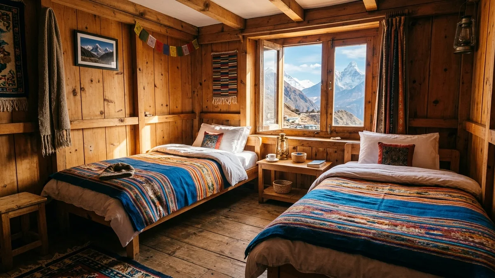
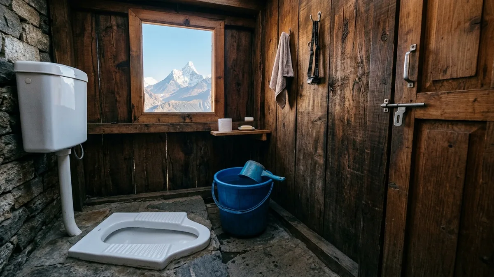
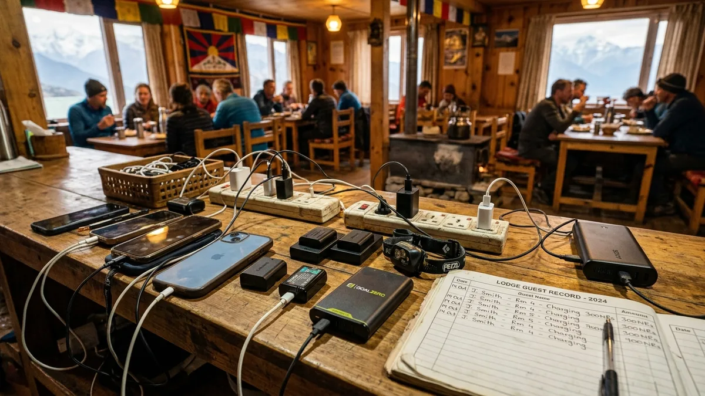

1. The Unfiltered Reality of Everest Base Camp: Expectation vs. Reality

Every year, more than 40,000 travelers set out to hike to Everest Base Camp. Many arrive equipped with state-of-the-art designer gear, having watched polished 60-second travel vlogs, only to suffer profound culture shock within 48 hours of landing in Lukla.
Trekking to Everest Base Camp is not a hotel vacation with day hikes. It is a genuine high-altitude expedition through one of the most rugged, isolated, and logistically unforgiving wildernesses on Earth. There are no roads, cars, or ambulances. Every scrap of comfort has been hauled uphill on human spines or yak backs.
| Element | The Romantic Expectation | The Raw Reality on Trail | How to Prepare Mentally |
|---|---|---|---|
| Everest Base Camp | A majestic view of Mount Everest's summit | Everest is completely blocked by Nuptse; you see glacial ice and tents | Climb Kala Patthar at dawn; that is where the iconic Everest view lives |
| Teahouse Bedrooms | Cozy, heated alpine chalets with roaring fires | Plywood cubicles with zero heating; -12°C interior frost on windows | Bring a -20°C sleeping bag and hot Nalgene bottle bed warmer |
| Bathrooms | Ensuite western toilets with steaming hot showers | Shared squat toilets; frozen water buckets; unwashed hair for 7 days | Embrace wet-wipe sponge baths; accept basic rustic hygiene |
| Atmosphere & Air | Crisp, pure, oxygen-rich pine-scented air | Dusty, dry, freezing air laced with powdered yak dung; coughing fits | Wear a neck buff 24/7; drink 4 liters of hot ginger tea daily |
| Physical Experience | A pleasant mountain stroll along scenic ridges | Pounding headaches, breathless steps, Cheyne-Stokes sleep gasps | Train cardiovascular endurance; maintain slow, rhythmic pacing |
2. The Truth About the Teahouse Bedrooms (Plywood Walls & Sub-Zero Nights)

In brochures, teahouses are described as "quaint mountain lodges." In reality, teahouse construction in the upper Khumbu consists of rough stone exteriors and uninsulated 5mm plywood interior partitions.
Here is what you must understand about your sleeping quarters:
- Zero Bedroom Heating: In the entire Khumbu valley, there is not a single standard teahouse bedroom with heat. The sole heat source in the entire building is the central wood/yak-dung stove in the communal dining hall, which is extinguished at 8:30 PM. Within 30 minutes of bedtime, the ambient temperature in your bedroom matches the outside mountain air—often plunging to -10°C to -15°C at Gorak Shep.
- The Acoustic Reality: Plywood walls offer zero acoustic isolation. You will hear every snore, cough, alarm clock, zipper pull, and late-night bathroom trip from every room on your floor. High-quality silicone earplugs are not an optional luxury; they are your primary sanity preservation tool.
- Frost on the Inside: When you exhale moisture in sub-zero air, that vapor hits the cold glass window panes and freezes into intricate white frost ferns on the inside of your room. In the morning, you will shake your down jacket and see frozen breath crystals falling from your collar.
3. The Bathroom Situation: Squat Toilets, Frozen Buckets & No Showers

Let us be completely blunt: the bathroom situation is the number-one source of distress for unprepared trekkers.
Between Lukla and Namche Bazaar, you can enjoy relatively clean western-style sit-down toilets, tile floors, and running water. However, the moment you ascend past Pangboche (3,985m) and Dingboche (4,410m), groundwater freezes completely. Pipe systems cannot operate because expanding ice bursts plastic and metal plumbing.
| Elevation Zone | Toilet Style | Flushing Mechanism | Showers Available? | Hygiene Strategy |
|---|---|---|---|---|
| Lukla to Namche (2,600m – 3,440m) | Western sit-down or clean squat | Running cistern flush | Yes, gas/solar hot showers ($4–$5) | Enjoy daily warm showers; charge devices |
| Tengboche & Pangboche (3,867m – 3,985m) | Mixed western and traditional squat | Gravity pipe or manual bucket | Limited gas showers ($6–$7) | Last recommended hair wash before the high zone |
| Dingboche & Pheriche (4,240m – 4,410m) | Predominantly squat toilets | Large plastic drum with handheld scoop | Solar bucket shower ($7–$8, drafty) | Stop showering! Switch 100% to wet wipe baths |
| Lobuche & Gorak Shep (4,940m – 5,164m) | Strictly squat pans / pit latrines | Frozen bucket; break the ice skim with a ladle | None (or $10 for lukewarm kettle) | Wear headlamp; carry own toilet paper & hand sanitizer |
The Shower Trap
Do not take showers above Dingboche (4,410m). Even if a lodge offers a "hot gas shower," the shower cubicle is an unheated wooden shed with wind blowing through the floorboards. Stripping naked in -5°C ambient air to stand under a trickling stream of warm water strips your skin's protective oils, shocks your nervous system, and almost inevitably triggers acute hypothermia or a severe respiratory chest infection.
4. The Infamous 'Khumbu Cough': Why Everyone Sounds Like a Chain Smoker

By Day 5 in Dingboche, you will notice a bizarre phenomenon: the teahouse dining hall sounds like a tuberculosis sanatorium. Trekkers, guides, and porters alike are constantly hacking, wheezing, and coughing.
This is the notorious 'Khumbu Cough' (high-altitude bronchitis). It is not caused by a bacterial lung infection; it is a physical reaction caused by three combined environmental factors:
- Extreme Dryness: Cold sub-zero air cannot hold moisture. Relative humidity at Gorak Shep frequently drops below 15%.
- Hyperventilation: Because oxygen pressure is cut in half, your lungs must cycle twice as much air per minute. Deep, rapid mouth-breathing drags freezing air directly into your bronchial passages.
- Trail Dust & Dried Yak Dung: High-altitude trails are pulverized into ultra-fine glacial silt mixed with dried yak feces trampled by thousands of pack animals. When afternoon mountain winds whip down the moraine, you inhale millions of airborne microscopic particulate irritants.
How to Prevent It: Never hike without a buff or bandana covering your nose and mouth above 3,500 meters. The buff traps exhaled water vapor, creating a warm, humid microclimate that conditions incoming air before it reaches your lungs. Drink gallons of hot lemon ginger tea, suck on glycerin throat lozenges, and avoid heavy mouth-breathing.
5. The Unvarnished Truth About Everest Base Camp Itself (You Can't See Everest!)
This is the single biggest secret that glossy guidebooks bury in fine print: You cannot see the summit of Mount Everest from Everest Base Camp.
When you stand at Everest Base Camp (5,364m / 17,598ft), you are tucked directly beneath the colossal southwestern face of Nuptse (7,861m) and the jagged West Ridge of Everest. Because of angular perspective, these gigantic closer walls completely block the black summit pyramid of Everest from view!
What Everest Base Camp ACTUALLY Is
- A massive, chaotic field of grey glacial rubble, ice boulders, and frozen meltwater pools sitting on the moving Khumbu Glacier.
- In Spring (April–May): A sprawling tent city of bright yellow and red expedition domes housing international climbers and Sherpa rope-fixing teams.
- In Autumn (October–November): A desolate, wind-swept moonscape with no permanent structures, marked by the famous prayer-flag-draped rock.
- A direct, jaw-dropping view into the treacherous, vertical ice towers of the Khumbu Icefall.
Where You ACTUALLY See Everest
- Kala Patthar (5,545m): The rocky black peak above Gorak Shep. This is the TRUE summit viewpoint where Everest rises in full majesty next to Nuptse and Pumori.
- Hotel Everest View Ridge (3,880m): The panoramic terrace above Namche Bazaar offering an iconic wide-angle morning vista.
- Tengboche Monastery Ridge (3,867m): The spiritual viewpoint with Everest framed directly above the sacred monastery stupa.
6. The Yak Caravan Hazard: Mountain Side vs. Cliff Side Survival

The most dangerous animals on the Everest Base Camp trail are not snow leopards or Himalayan black bears. They are dzokyos and yaks.
These heavy, half-ton beasts of burden transport everything from gas cylinders to kerosene barrels. They are driven by drovers whistling and shouting, and once a loaded caravan builds momentum on a narrow path, it cannot easily stop.
The Golden Yak Rule: Whenever you hear the resonant clanging bells of an approaching caravan, you must immediately halt and move. But WHICH SIDE DO YOU STEP TO?
CRITICAL SAFETY: Always Stand on the Mountain (Cliff) Side!
Always press your back against the mountain wall (the uphill side of the slope)—NEVER step toward the valley verge or the cliff drop-off. Pack animals carry wide metal boxes and propane tanks that project 2 feet out from their flanks. If an animal stumbles, shakes its horns, or is bumped from behind, a load on the outer verge will instantly knock you off the edge into a 200-meter vertical canyon.
7. The Teahouse Nickel-and-Dime Reality: Hidden Costs Above 4,000m

Trekkers are often thrilled to see teahouse room rates advertised for as little as $5 to $10 USD per night. They assume their overall daily expenses will be practically zero.
Then reality hits. In high-altitude lodges, everything except the air you breathe has an extra fee attached to it:
| Item / Service | Lukla / Namche Cost | Dingboche / Lobuche Cost | Gorak Shep Cost | Smart Money-Saving Workaround |
|---|---|---|---|---|
| Smart Phone Full Charge | Free – $2 USD | $3 – $4 USD | $5 – $6 USD | Bring a 20,000mAh power bank; sleep with it in your bag |
| Large Power Bank Charge | $3 – $4 USD | $6 – $8 USD | $10 – $12 USD | Pre-charge fully in Namche where electricity is grid-connected |
| Hot Gas / Solar Shower | $4 – $5 USD | $6 – $8 USD | $8 – $10 USD | Use warm wet wipes; do not shower in freezing high zone |
| 1 Liter Boiled Water | $1.50 – $2.00 USD | $3.00 – $3.50 USD | $4.00 – $4.50 USD | Use a squeeze filter (Katadyn) + Aquatabs chemical backup |
| AirJaldi / Everest Link Wi-Fi | $20 for 10 GB | $20 for 10 GB | $20 (often very slow) | Buy an NTC or Ncell 4G eSIM in Kathmandu; works up to Pangboche |
| Roll of Toilet Paper | $1.50 USD | $3.00 USD | $4.00 – $5.00 USD | Buy 3 rolls in Kathmandu or Namche and carry in your duffel |
8. Altitude Sleep Apnea & Cheyne-Stokes Breathing
At 2:30 AM in Lobuche (4,940m), you suddenly awaken bolt upright in your sleeping bag, heart hammering at 110 beats per minute, gasping desperately for air as if you were drowning.
You think you are having a heart attack or dying of high altitude pulmonary edema. You are not. You are experiencing Cheyne-Stokes breathing (periodic breathing at high altitude).
The Physiology: When you sleep, your conscious control of respiration turns off. In thin air, your arterial oxygen drops, signaling your brain stem to hyperventilate. But as you hyperventilate rapidly, you blow off huge amounts of carbon dioxide (CO2). Carbon dioxide is the primary chemical trigger that stimulates breathing; when blood CO2 levels drop too low, your brain tells your diaphragm to stop breathing entirely for 10 to 15 seconds (apnea).
During those 15 silent seconds, oxygen levels plummet further until your emergency survival receptors fire, waking you up with an adrenaline surge and a desperate gasp.
How to Deal With Periodic Breathing
Understand that periodic breathing is a completely normal physiological adaptation to extreme altitude that affects over 80% of healthy humans above 4,500 meters. Do not panic. Elevate your head with two pillows or your rolled-up fleece jacket, take five slow, deliberate deep breaths through your nose, take a sip of water, and allow your heart rate to settle back down.
9. The Food Monotony & High-Altitude Loss of Appetite

On Day 1 in Phakding, the teahouse menu seems delightfully exotic: momos, pizza, yak cheese sandwiches, spring rolls, and noodles.
By Day 7 in Dingboche, you will realize that nearly every item on the 4-page menu is prepared from the exact same five basic ingredients: white rice, potatoes, flour, cabbage, and dried noodles. Western dishes like 'Everest Pizza' (ketchup spread on a dense chapati with a slice of processed cheese) become unpalatable.
Simultaneously, high-altitude anorexia sets in. Your stomach feels tightly knotted, and the sight of food can cause mild nausea. However, your body is burning 4,000+ calories a day.
The Eating Rule: You must treat eating as a medical duty, not an entertainment activity. Stick to hot, wet, easily swallowable carbohydrate dishes: garlic soup, vegetable thukpa, oatmeal porridge, and Dal Bhat. If you stop eating because "you don't feel hungry," your body will enter acute hypoglycemic exhaustion within 24 hours.
10. The Helicopter Paradox: The Soundtrack of the Khumbu
Before setting foot in Nepal, most people imagine the Himalayas as an unbroken sanctuary of silent mountain majesty.
The reality? The Khumbu Valley has a constant, mechanical soundtrack: helicopters.
From 6:30 AM until noon, the narrow sky corridor between Lukla, Namche, and Gorak Shep reverberates with the thunderous roar of Eurocopter B3 and Bell helicopters. On a clear morning, you may see 30 to 50 helicopter passes buzzing overhead.
Legitimate Medical Rescues
- Helicopters perform genuine life-saving emergency evacuations for trekkers suffering from severe HAPE, HACE, cerebral edema, broken limbs, or severe hypothermia.
- They transport essential heavy cargo, bridge steel, and medical supplies to remote mountain clinics.
Commercial & Luxury Charters
- Wealthy tourists booking 1-day helicopter breakfast flights to the Hotel Everest View or direct landing at Base Camp.
- Tired trekkers with mild fatigue who fraudulently claim "altitude sickness" on their travel insurance to hitch a fast, comfortable ride back to Kathmandu instead of walking down.
11. Hygiene & The 'No-Shower' Badge of Honor
At home, missing a single daily shower feels unthinkable. On the Everest Base Camp trail, not showering for 8 to 10 consecutive days is a universal badge of honor and medical wisdom.
Here is how seasoned mountain leaders manage trail hygiene without getting sick:
- The 'Sherpa Sponge Bath': Every evening when you reach your room, take 3 to 4 large biodegradable wet wipes. Warm them inside your jacket pocket against your body for 10 minutes so they don't feel like ice sheets against your skin. Wipe down your face, neck, armpits, groin, and feet, and immediately put on your clean, dry sleeping base layers.
- Hand Hygiene is Non-Negotiable: Over 75% of gastrointestinal illnesses on trail are transmitted through contaminated hands (shaking hands, touching dirty teahouse door handles, communal salt shakers). Carry a pocket bottle of 70% alcohol hand sanitizer and use it vigorously before every meal and after every toilet visit.
- Dry Shampoo & Bandanas: Do not attempt to wash your hair with freezing tap water; wet hair in sub-zero drafty rooms guarantees severe sinus headaches. Use a dry shampoo powder or simply cover your greasy hair with a warm beanie or buff.
12. Mental & Emotional Hurdles: The Day 7 & 8 Psychological Wall
Fitness gets you to Namche Bazaar; mental grit gets you to Everest Base Camp.
Around Day 7 in Dingboche or Day 8 in Lobuche, almost every trekker hits a formidable psychological wall. It is the cumulative toll of:
- 7 straight days of sleeping in sub-zero unheated rooms.
- Persistent low-grade headaches and elevated resting heart rates.
- Exhausting 6-hour daily uphill grinds where every 10 steps leave you gasping for breath.
- Unwashed hair, filthy boots, and repetitive teahouse food.
- Sensory fatigue and emotional vulnerability brought on by chronic hypoxia.
It is completely normal to feel homesick, irritable, or ready to quit during the climb up Thokla Pass. The secret is breaking your journey down into miniature, manageable milestones. Don't think about the 130 kilometers or Base Camp. Think only about the next suspension bridge, the next tea stop, the next 20 paces. When you finally touch that spray-painted rock at Base Camp, the flood of triumph and emotion will be among the most profound moments of your life.
13. What Sherpa Guides Wish Every Client Knew Before Booking
Our senior Sherpa guides have stood on the summit of Everest multiple times and guided thousands of foreign trekkers. Here is what they wish every traveler understood before boarding the flight to Lukla:
Trail Etiquette & Respect
- Always Pass Chortens & Mani Stones on the Left: In Tibetan Buddhist tradition, you must always walk to the left of mani stone walls, prayer wheels, and chortens (clockwise rotation). Passing on the right is considered spiritually disrespectful.
- Never Touch Monks' Heads or Sacred Relics: Treat gompas and shrines with quiet reverence. Always ask permission before photographing local Sherpa elders or monk ceremonies.
The Ego Trap
- Ego Kills; Pacing Heals: Marathon runners and gym athletes often fail on EBC because they try to power up hills at their sea-level pace. In the Himalayas, the slowest trekker who takes tiny, rhythmic, turtle-like steps ("Bistari, bistari") acclimatizes best and reaches Base Camp smiling.
- Never Hide Symptoms: Don't try to be a "tough hero" by hiding a pounding headache or nausea from your guide. If you tell us early, we can give you garlic soup, hydrate you, adjust your pace, or give Diamox. If you hide it until you collapse from HAPE, you put your life and our team's lives at risk.
14. Frequently Asked Questions: The Real Answers You Won't Find in Glossy Brochures
Can you actually see Mount Everest from Everest Base Camp?
No, you cannot. Nuptse (7,861m) and the West Ridge of Everest tower directly above Base Camp and block the main summit pyramid from view. To see the legendary unobstructed summit of Mount Everest, you must climb Kala Patthar (5,545m) or view it from the ridge above Namche Bazaar.
Do teahouse bedrooms have heating or electrical outlets?
No. Standard teahouse bedrooms have zero heating and zero electrical outlets. Walls are uninsulated 5mm plywood, and nighttime indoor temperatures frequently drop between -5°C and -15°C above Dingboche. Heating is restricted strictly to the central dining hall stove (burning dried yak dung) between 4:30 PM and 8:30 PM.
How bad are the toilets on the Everest Base Camp trek?
In lower villages (Lukla, Phakding, Namche), you will find clean western-style flush toilets. Above Pangboche and Dingboche, groundwater freezes, and toilets become traditional ceramic or wooden squat pans flushed manually by dipping a plastic pitcher into a drum of cold (or ice-capped) water. Always carry your own toilet paper, wet wipes, and hand sanitizer.
What is the 'Khumbu cough' and can it be prevented?
The Khumbu cough is high-altitude bronchitis caused by breathing extremely dry, sub-zero air combined with pulverized trail dust and dried yak dung particles during heavy exertion. It can be largely prevented by wearing a breathable neck buff or mask over your mouth and nose 24/7 above 3,500 meters, drinking 4 liters of warm fluids daily, and sucking on throat lozenges.
Is it safe to shower during the trek?
Showers are safe and pleasant between Lukla and Namche Bazaar ($4 to $5). However, we strongly advise against showering above Dingboche (4,410m). Stripping naked in drafty, unheated wooden shower stalls in sub-zero temperatures rapidly induces acute chills, hypothermia, and respiratory illness. Stick to warm wet-wipe sponge baths in the high zone.
Why do helicopters fly over the trail all day long?
The Khumbu sky corridor is filled with helicopters performing critical emergency medical evacuations for injured or altitude-sick trekkers, transporting cargo to remote clinics, and carrying luxury tourists on morning sightseeing flights to Base Camp or Hotel Everest View.
Why must I always stand on the mountain side when yaks pass?
Yak caravans carry wide metal cargo boxes and gas cylinders that extend beyond their flanks. If you stand on the valley edge (cliff side), a passing animal can easily bump you off the trail into a lethal vertical drop. Always press your back against the solid mountain wall.
What is Cheyne-Stokes breathing and why does it happen at night?
Cheyne-Stokes breathing is a periodic sleep pattern common above 4,000m where periods of rapid breathing alternate with temporary 10-to-15-second breathing pauses (apnea). It happens because your brain's respiratory sensor struggles to balance low oxygen and low carbon dioxide levels during sleep. It is completely benign; do not panic, elevate your head on two pillows, and breathe rhythmically.

Ready to Experience the Himalayas?
Whether you are preparing for high-altitude trekking, cultural circuits, or alpine summit expeditions, start planning a bespoke journey tailored to your fitness, travel season, and style.